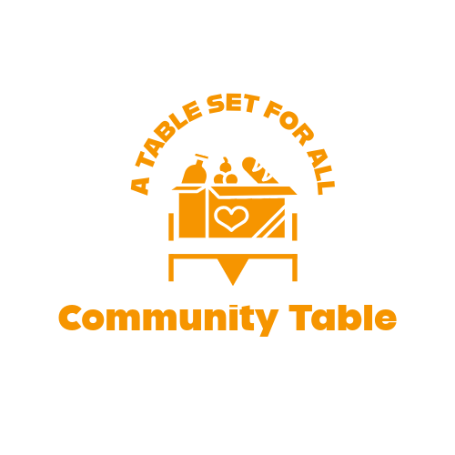

Information
We welcome everyone — no referrals or proof of need required. All meals are vegetarian-friendly, with vegan and gluten-free options available daily. The space is fully wheelchair accessible, with step-free entry and accessible bathrooms.
Our Story

Community Table was established in 2018 by local organiser Maya Patel and chef David Green as a neighbourhood initiative to tackle food insecurity and social isolation in the heart of East London. What began as a small food bank and soup kitchen in a church hall has evolved into a vibrant community hub where people cook, share, and learn together.
Today, Community Kitchen runs a zero-waste café, weekly community meals, and cooking workshops that celebrate seasonal, affordable, and culturally diverse food. All proceeds go back into supporting local families through meal donations, skills training, and volunteer opportunities.
Recognised for its innovative approach to social sustainability, Community Kitchen received the London Food Roots Award (2023) and continues to partner with local growers and surplus suppliers to ensure that no good food goes to waste.
Need help or want to help?

If you want to meet and speak to us
Alternatively, if you would like to send any
If you would like to hear of the